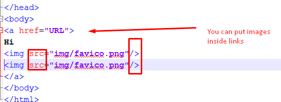

Images or the <img> tag is used to display images on the screen. Images are different from other HTML tags because they are automatically displayed next to each other rather than under each other. It is also a self-closing tag which means that you put a / in before you finish the opening tag. To tell the computer where the image is stored you use a src attribute and then put in the URL or location.
HTML Result